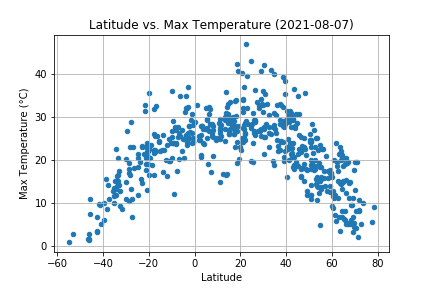

Summary: Latitude vs. Different Climate Factors
(Max Temperature Visual)

I analyzed weather patterns based on distance to the equator. I utilized Python script to visualize the weather of 500+ cities across the world of varying distance from the equator.I utilized a simple Python library, the OpenWeatherMap API, to create representative models of weather across world cities.
I first assembled a dataset of more than 500 cities using the citipy python library and python to randomly generate coordinates to get the nearest city. Then I used this list of cities to get the weather using the OpenWeatherMap API. Using MatPlotLib, I used each city's maximum temperature, humidity, cloudiness, or wind speed and plotted the data with the latitude on the appropriate graphs.
The result is shown in depth on each visualization page.